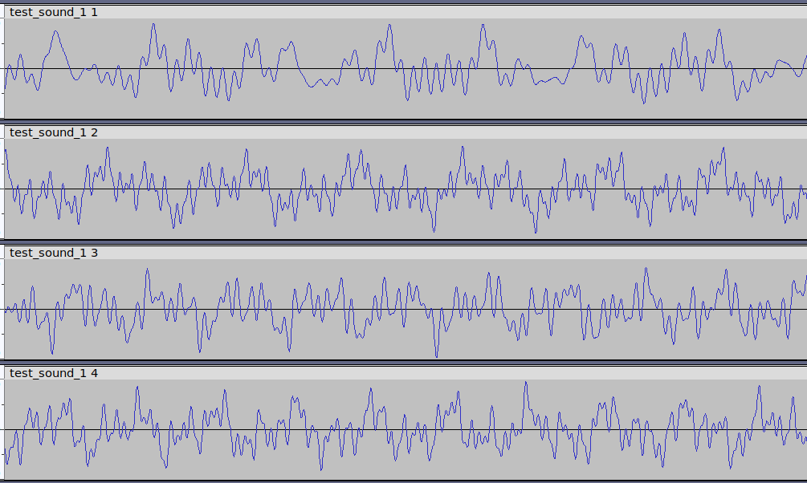

Wavaugmentate package documentation¶
The module wavaugmentate makes audio signal augmentation conversions. It provides the Mcs, Aug classes and wavaugmentate console utility.
Mcs is an object for multi-channel audio.
Aug helps to perform augmentation data inside Mcs objects for AI models learning purpose.
Input Data¶
WAV-file or NumPy array.
Array shape: (num_channels, num_samples).
Output Data¶
Same types as in section Input Data.
Augmentation Methods¶
Amplitude (volume change, inversion).
Time shift.
Echo.
Adding noise.
Time stretching (not implemented).
Tempo change (not implemented).
Pitch shift (not implemented).
Adding silence.
Frequency masking (not implemented).
Time masking (not implemented).
Combinations of methods.
Additional Functionality¶
Generation multichannel tonal signals of desired frequency, amplitude, durance.
Generation multichannel speech-like signals of desired formants frequency, amplitude, durance.
Interfaces¶
Signal augmentation can be applied by two ways: 1. As python module Mcs, Aug classes methods. 2. As console application wavaugmentate with CLI interface options.
Note
This project is under active development.